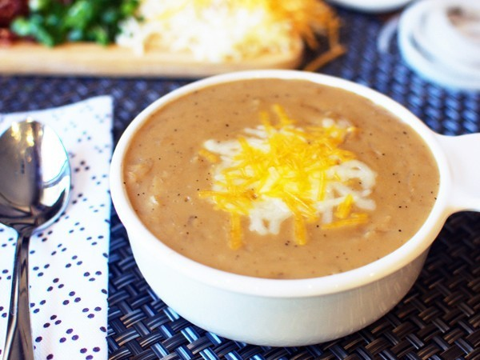

Outback Onion Soup

This recepie requires takes a total of 2 hours to cook and can be done by almost anybody
Ingredients:
- 2 quarts water
- 8 cubes beef bouillon, crumbled
- 2 large onions, quartered and sliced
- 1 teaspoon salt
- 1 teaspoon coarsely ground black pepper
- ¾ cup all-purpose flour
- ½ cup cold water
- 1 cup heavy cream
- 1 ½ cups shredded Colby-Monterey Jack cheese
- In a large, heavy pot over medium heat, bring 2 quarts water to a boil. Stir in bouillon cubes and let boil 10 minutes, until dissolved. Place onions in boiling water, reduce heat and simmer 30 minutes.
- Stir in salt and pepper and simmer 30 minutes more.
- Stir the flour into 1/2 cup cold water to make a paste. Gently whisk this mixture into the simmering soup, being careful not to break the onions. Simmer 30 minutes more.
- Stir in cream and cheese until cheese is melted and mixture is thoroughly heated. Thin with water if necessary. Serve hot, garnished with croutons, if desired.